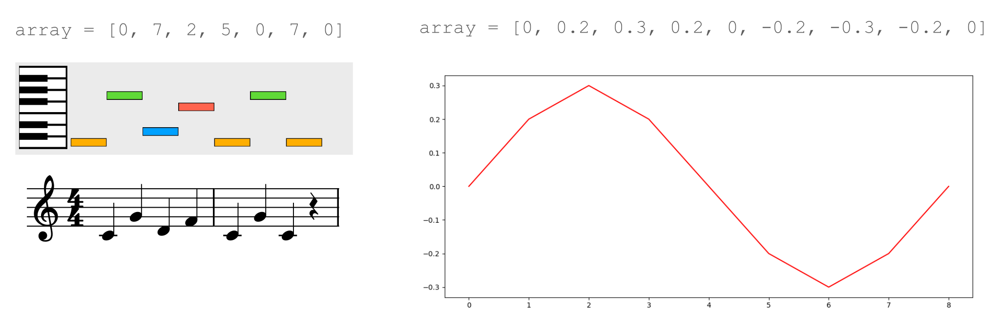
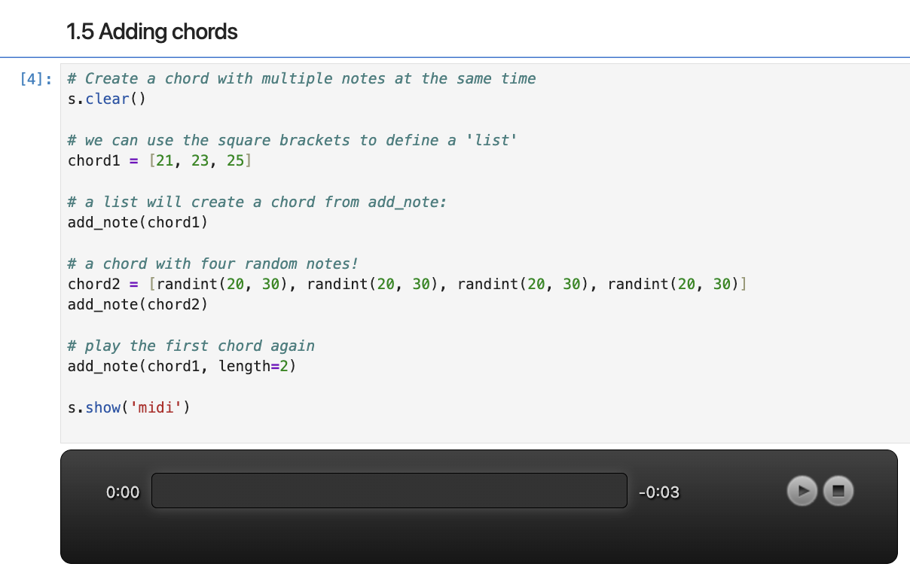
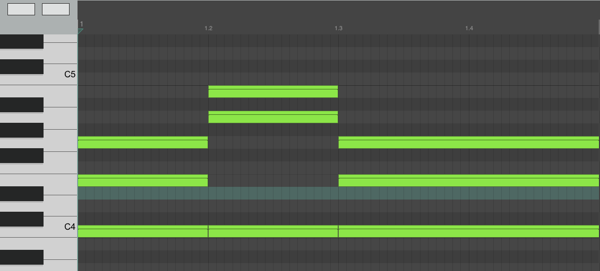
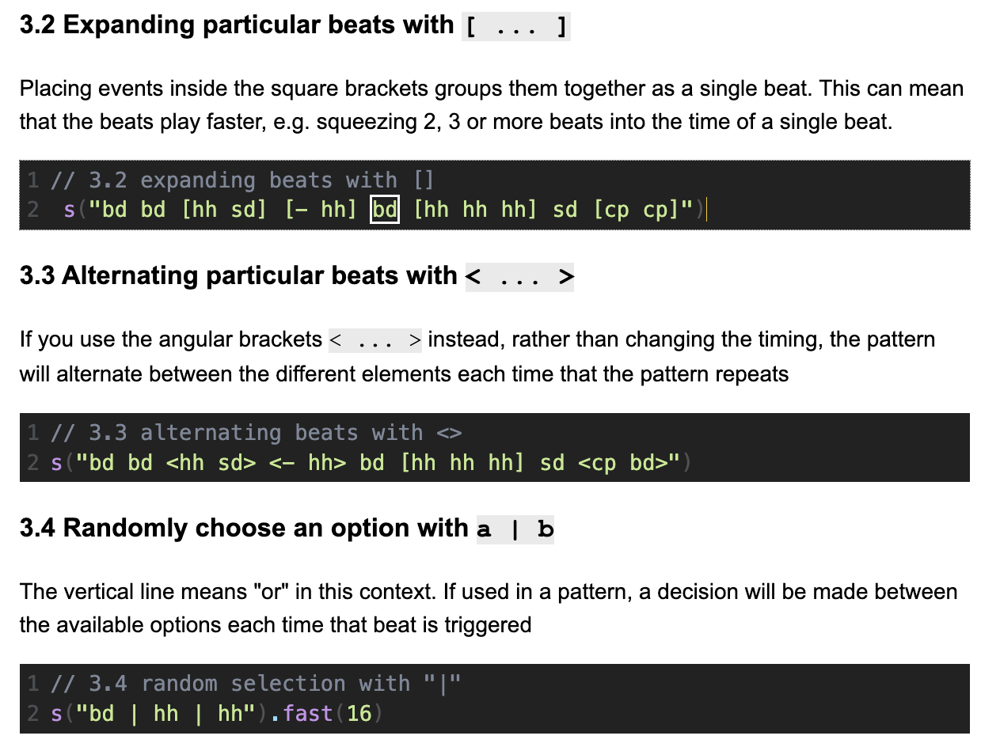
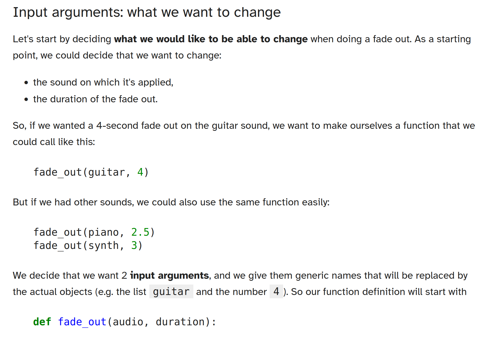
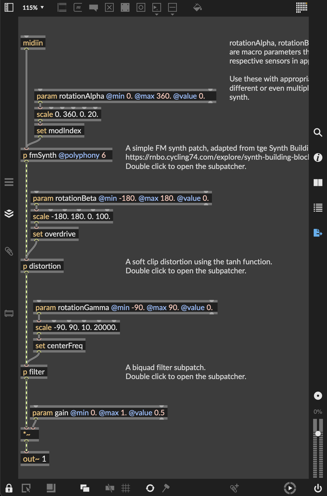
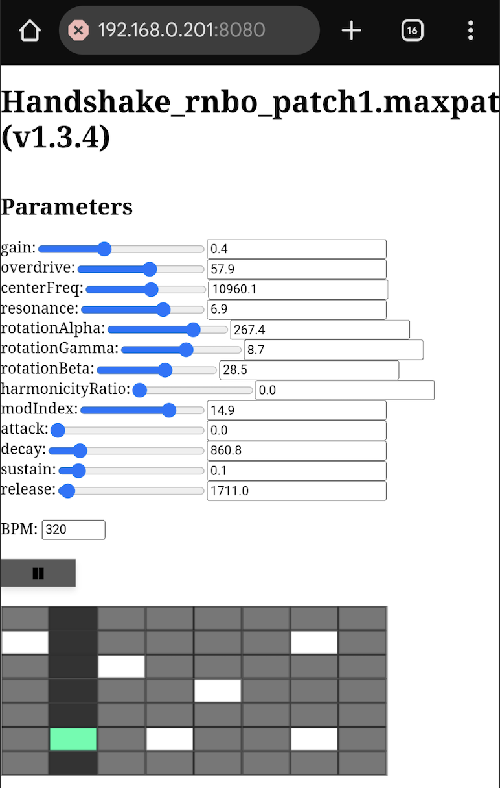
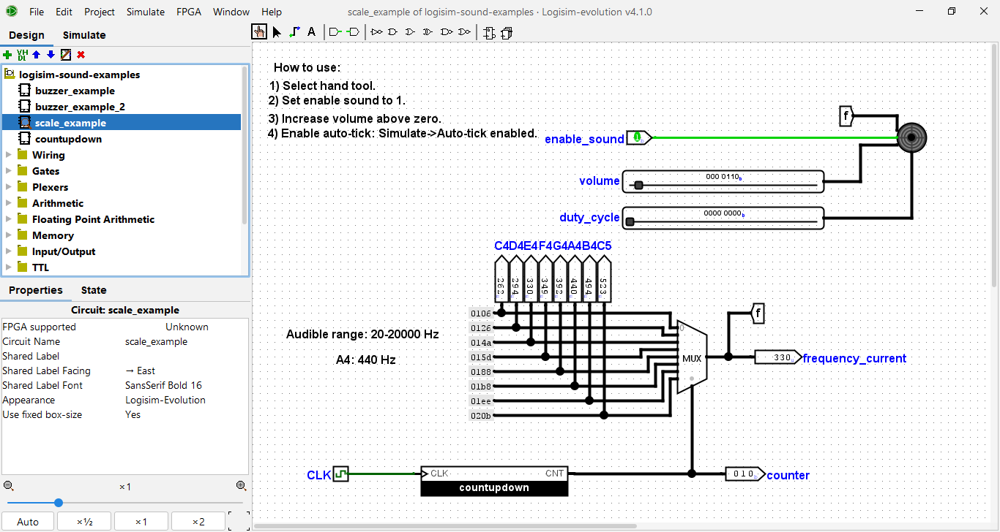

Practical Approaches to Using Sound and Music in Programming Pedagogy
student-engagement, tool-review
Introduction
This chapter is designed to serve as a brief tour of connections between sound, music, programming and pedagogy. In particular, it is aimed at educators who want to explore sound and music in their own programming pedagogy. The chapter presents motivations for connecting these domains, introduces prior work in this area, and presents a range of (Hamilton et al., n.d.) that can be taken up or adapted to bring sound and music into coding education.
Making code that engages with sound and music can be fun, even with only a very basic understanding of programming concepts, and regardless of any prior music education. There are many ways in which sound and music may connect with programming. For example:
- composing with code: using code to write pieces of music,
- performing with code: writing code in a performance to make music,
- creating instruments: building software tools for personal music making or for others to use,
- understanding sound: coding to analyse and explore representations of sound and/or music,
- data sonification: representing existing data as sound or music, either in real-time or with historical data,
- coding responsive sound and music for games or other interactive programs.
We will first explore motivations for connecting music with programming, followed by a brief overview of the rich existing work in this domain. The set of practical accompanying resources that can serve as starting points into different kinds of music/coding projects are then introduced. The resources themselves are accessible here.
Why Combine Programming With Sound and Music?
Music and programming have a rich intertwined history. Simple but effective connections can be found between programming concepts — such as iteration, abstraction, conditionals, loops — and musical concepts such as rhythm, timing, harmony, pattern and so on. Writing a program that generates sound provides an immediate, engaging way to manifest abstract processes. In a pedagogical sense, the sound output is a form of feedback. Programs don’t have to be complicated or sophisticated in terms of the coding to be musically satisfying. Students can create sound and music that they can share with friends and relatives, who may not know the first thing about programming but can nonetheless engage with the creative outcomes.
Programming concepts can be playfully explored in musical contexts. For example, an integer array can be rendered as a piano melody, a drum rhythm, or directly as a sound file (see Figure 26.1). This gives an immediate meaning to the output data, motivating students to care about the specific values in the array, the length of the array, the range of data in the array, different ways of reading and writing values to and from the array and so on. Operations on that array take on musical meanings: ordering an might provide a scale; reversing an array reverses musical material; subdividing an array isolates a particular phrase. Meaningful data that students care about can motivate students to find things out for themselves, and provides a context for the kind of creative explorations that are often lacking on introductory programming courses (Sharmin 2021).
Sound and music can also be used to present and experience data in different ways. Data sonification has a long history (Worrall 2019), from giving a constant awareness of something otherwise invisible as with Geiger counters or medical monitoring devices, to hearing emergent behaviours in dynamical systems, providing auditory graphs for the visually impaired (Walker and Mauney 2010), or creative projects that use the data for musical ends (Bulley and Jones 2011; Barrett and Mair 2014).

There are obvious parallels here with coding and visual art. Environments such as Processing (Reas and Fry 2006) connect programming with image and animation, motivating learning and exploration (Reas and Fry 2007, 1). As explored in the following section, there is a similarly rich history of music making in programming pedagogy. To mix music, art, computers and coding therefore continues a long and fruitful tradition (Reichardt 1971; Dreher 2014; Wang 2017), and can serve as a reminder to both students and educators that coding is fundamentally about making things and is therefore a creative act.
Overview of Existing Work
Music and programming have been connected in a wide variety of ways, sometimes through the addition of libraries for integrating musical inputs and outputs with existing languages, and sometimes through the development of specifically designed languages or environments. As this is a very short chapter, it only scratches the surface of many of the interesting work done in this domain, and the focus is on music/code projects with explicit pedagogical dimensions.
Most mainstream programming languages are able to work with sound and music as outputs. This could be achieved by writing data to a file, e.g. an audio file (see ‘An Educator’s Guide to WAVE Format Files’ below) or a MIDI file (a common musical data format that can be used to synthesise sound). The program could also transmit real-time messages to an audio engine that runs separately, e.g. a standalone synthesiser or sampler1, a digital audio workstation, or frameworks such as SuperDirt. Most mainstream programming languages will have libraries available for these purposes, making it relatively easy to adapt any simple programming exercise into a sonic/musical exercise.
The Scratch programming language is a well-established starting point for young people to engage with coding. While sound and music are not usually the primary focus for students, there is still considerable scope for creativity and experimentation. Brown and Ruthman present a useful range of project types in their Scratch Music Projects book (Brown and Ruthmann 2020), from simple theremin-like interactive instruments, through playing simple riffs, up to thinking about loops, musical structures, generative music, and live coding performance. As Scratch is used more generally for creating games, stories or animations, students can be motivated to explore sound and music as one component in wider creative projects.
Sonic Pi is a popular example of a language specifically designed for music. It is a simple but flexible environment that aims to support school-age students to learn to code by making music (Aaron 2016). As with Scratch, the focus on play and having fun with Sonic Pi can foster a more positive attitude towards programming (Petrie 2022), and can provide a starting point for moving from simple programming concepts to more involved topics such as concurrency (Traversaro et al. 2024). Sound-making programs can start off very simple with basic commands such as play 60, but can be built into entire pieces or performances 2.
Sonic Pi is rooted in practices of live coding for music, a substantial community that serves as an access point to programming for many musicians, as well as an access point to music for some programmers. The movement has engaged closely with programming pedagogy from different perspectives; Blackwell et al (Blackwell et al. 2022) provide a useful overview. The proceedings of the International Conference on Live Coding also present a broader repository of topics, including live coding music in educational contexts (Corvi et al. 2023; Jara López 2025). Live musical coding is also notable as a community that has attempted to push back against coding as a male-dominated space (Blackwell et al. 2022), with all-women and non-binary workshops being a regular occurrence. Armitage (2018) points to the domain as being a “a space in which to fail constructively”.
The EarSketch (Engelman et al. 2017) and TunePad projects are similar to Sonic Pi in their pedagogical aims, in that they seek to broaden participation in computing by demystifying coding and relating it to a domain of interest to students. The projects embed coding elements alongside more conventional music-making tools such as instruments, tracks, a timeline, a mixer, etc. This provides a familiar workspace for those with musical backgrounds and means that the code doesn’t need to cover all aspects of the music making, but can be written in snippets with very particular goals, such as making a drum loop, or a bass riff. Both projects run in the browser and use Python (although EarSketch has a JavaScript option). They are designed specifically with sharing in mind, both code sharing and collaborative editing, further motivating students to engage with the coding (Freeman et al. 2019). Petrie (2024) studied the potential for both projects to support computational thinking in 11-12 year old students who had no prior school experience of either programming or music making. Petrie notes that students benefit from the fact that the kinds of musical tasks supported by these projects are naturally incremental and iterative.
A key concern across all the above projects is that there should be room for musical variety and expression; although they may present simple entry points to engaging with programming, it is possible to create rich and interesting creative work that students will be proud of.
Accompanying Resources for Educators
.
├── python-functions-fade
│ ├── functions.ipynb
│ ├── guitar.wav
│ ├── synth.wav
│ ├── piano.wav
│ └── wav_library.py
├── gestural-instruments
│ ├── max/Handshake_rnbo_patch1.maxpat
│ └── web
│ ├── export/
│ ├── img/
│ ├── index.html
│ ├── js
│ │ ├── app.js
│ │ ├── draw.js
│ │ └── guardrails.js
│ ├── ssl/
│ └── style/
├── guide-to-wave-format
│ ├── functions.ipynb
│ ├── ipynb_audio_interactivity.ipynb
│ ├── iteration.ipynb
│ ├── wav_files.ipynb
│ ├── wav_library
│ │ └── c/ c++/ java/ python/ rust/
│ └── wav_library.py
├── python-piano
│ ├── pianopiece_assignment.ipynb
│ └── pianopiece_learning.ipynb
└── strudel-drum-patterns/index.htmlFive example resources accompany this chapter, reflecting some of the different approaches to combining aspects of sound, music and programming in the different authors’ existing pedagogical work. Each example resource comes with a readme that gives a sense of how the resource might be used, who might find it valuable, what prior knowledge the students may need, and what technologies will be needed. Each resource is described briefly below.
Creating a Piano Piece With Python
This resource is aimed at students who have started on Python quite recently. It attempts to make musical output as simple and accessible as possible. Students are shown how to generate piano pieces as MIDI data which can be played back directly within a Python notebook. Students can develop their understanding of fundamental programming concepts such as lists, loops and conditionals. The ability to directly hear the results is intended to motivate students to think about how they can develop the code by themselves to try to explore how they can start to tailor the musical output towards something they find sonically interesting or satisfying.
The resource is archived as part of the accompanying resources (Hamilton et al., n.d.), and at the time of writing can be accessed here.


A subsection of the Python piano learning resource as a Python notebook, with a visualisation of the MIDI output on the side.
Creating Drum Patterns in the Browser With Strudel
This resource is both similar and different to the piano example. Students engage with Strudel, a browser-based JavaScript port of the popular TidalCycles live coding language. The language has been particularly popular for exploring algorithmic approaches to beat making3. The editor provides useful visual feedback to show how the code relates to the unfolding beats. Both TidalCycles and Strudel have been popular and accessible ways to engage with code for the first time. They also present a useful introduction to Haskell and functional programming for others. Substantial communities have been built around these technologies (Blackwell et al. 2022), offering routes for those new to either coding or music making to quickly connect to others working in this way.

The resource is archived as part of the accompanying resources (Hamilton et al., n.d.), and at the time of writing can be accessed here.
An Educator’s Guide to WAVE Format Files
Resources are contained within the guide-to-wave-format/ directory (Figure 26.2). The guide-to-wave-format/wav_files.ipynb notebook addresses educators directly, laying down the ground work needed to make the portable and technologically accessible audio programming lessons. No prior knowledge is assumed; the resource is intended to guide the reader through the process of WAVE file creation, the ultimate goal being a simple library ripe for customisation and intimately understood for easy dissemination to students.
All data can be represented as sound, and the WAVE file is one of the simplest means of data sonification. Most modern operating systems (and many older ones) will support WAVE file playback through a media player, browser, or command line tool. The resource emphasises the use of standard libraries, both to improve portability and to allow students to get started quickly, instead of burdening them with language-specific ancillary concepts that could potentially be a demotivating obstacle to new programmers.
The intention is not to be prescriptive, but rather show how malleable the WAVE format can be for teaching music and programming.
The central lesson is provided in an IPython (Jupyter) notebook, but the resource in guide-to-wave-format/wav_library provides companion code in C, C++, Java and Rust to reinforce the basic elements needed to solve the problem. The resource is archived as part of the accompanying resources (Hamilton et al., n.d.), and at the time of writing can be accessed here.
Introducing Functions by Blaying With Audio Files
This resource is aimed at novice Python programmers, with some familiarity with variables, lists, and loops. It motivates the use of user-defined functions and introduces their syntax, using fade-ins and fade-outs on audio files as examples. Throughout the activity, students are encouraged to iterate on their function structure and choice of input arguments and return values, to help them take ownership of their program design, to better understand how and why these choices are made, and to internalise that one-shot perfect code structure isn’t necessarily achievable (or even a goal that one should aim for).
Working with audio files is an intuitive way to understand how one chooses input arguments in particular, as the choice naturally arises from “what do I want to be able to control or to change easily”, as opposed to “what do I want to hide away and trust that it will always reliably do the same thing” (the function body). The effect of the students’ functions is also directly observable (audible, in fact!) by listening to the faded-in or faded-out audio.

The exercises rely on using the Python module wav_library.py described below in ‘An Educator’s Guide to WAVE Format Files’ as a tool to read WAVE audio files, with no requirement for students to fully understand it or to have done the activity described there previously. The resource is archived as part of the accompanying resources (Hamilton et al., n.d.), and at the time of writing can be accessed here.
Gestural Instruments in the Browser
This resource demonstrates the creation of a web-based musical instrument that can be controlled via the sensors on a smart phone. This kind of activity would require students to have some existing experience of the coding language, so would fit well as an exercise or assignment as part of a wider course on music, art, design or programming. The coding is primarily done in Max, a proprietary visual programming environment aimed at musicians, as shown in Figure 26.7. RNBO — an extension of Max — allows the visual code to be exported as JavaScript, and will auto-generate a simple HTML page that embeds the project.


One of the potential benefits of working in this way is that although students start from a visual programming environment, their software can be made available to anyone with a browser (see Figure 26.8), and they begin to get an exposure to JavaScript and web development. As this resource shows, small tweaks to this JavaScript can be added to refine the user interface, and add extra functionality such as smart phone sensor control.
The example provided here is a responsive synthesiser hosted on the web that, when accessed from a smartphone, utilises the motion sensors to control specific parameters of the synthesiser. Once the code has been exported, it can be further developed through the generated JavaScript/HTML. In this example, a simple sequencer for playing notes and visual feedback is added using the p5.js library. Motion data from a smartphone’s orientation sensors is mapped in real time so that gestures like tilting or twisting can be used to control the sound. The resource is provided as a worked example that can be adapted for musical instruments, live installations, audience-participation performances, or experimental audio-visual tools. The resource is archived as part of the accompanying resources (Hamilton et al., n.d.), and at the time of writing can be accessed here.
Building a Digital Circuit To Play Sounds and Notes Using Logisim Evolution
This resource explores sound and music making in the context of logic circuits. It is aimed at students working with the basics of digital logic circuit simulator Logisim Evolution. It demonstrates how to use a buzzer to play sounds and notes. The ability to generate sounds is intended to make learning about digital logic more fun and engaging.
Only minimal knowledge is required to test run the project and it can be used as part of a tutorial on digital logic and Logisim Evolution. Alternatively, it could be used as an assignment. It can also be used in music teaching to explain how notes relate to frequencies.
Three main example circuits are provided: a minimal example showing how to use the buzzer; a slightly more advanced example, introducing a bit extender and an adder; and a circuit playing the C major scale using a counter and a multiplexer (Figure 26.9).

Motivated students/learners can then potentially go further by creating a complete digital piano keyboard or synthesizer, or play preset tunes from a digital memory. Such circuits could then potentially be implemented in real hardware later on.
The resource is archived as part of the accompanying resources (Hamilton et al., n.d.), and at the time of writing can be accessed here.
Summary
This chapter has touched briefly on some of the many connections between sound, music, and programming that exist, and how these can be and have been productively brought to bear on programming pedagogy. We close with Rebecca Fiebrink’s advice to musical coders (Brown and Ruthmann 2020, 145), that captures some of the excitement of bringing these domains together:
Have you figured out how to recreate your favorite pop song with code? Great! Now try composing a new song that’s all your own. Or see if you can create new types of music that are easier to make with code than without it — or even types of music that are impossible to create without a computer! What do you come up with? Can you make new sounds that nobody in the world has ever heard before? Can you make musical “instruments” that you can interact with to perform music that you could never make with a piano or a violin? What else could you create, that nobody before you has ever made?
Appendix: Resource List for Educators
| Name | Type | URL |
| EarSketch (Python or Javascript) | Browser IDE | https://earsketch.gatech.edu |
| gm (R) | Library | https://flujoo.github.io/gm |
| Mido (Python) | Library | https://mido.readthedocs.io |
| Max | Visual coding | https://cycling74.com |
| PureData | Visual coding | https://puredata.info |
| Scratch | Browser IDE, visual coding | https://scratch.mit.edu |
| Sonic Pi (Ruby) | Live coding environment | https://sonic-pi.net |
| Strudel | Browser IDE | https://strudel.cc |
| SuperCollider | Programming language | https://supercollider.github.io |
| Tau5 | Browser IDE | https://tau5.live |
| TidalCycles | Live coding environment | https://tidalcycles.org |
| TunePad (Python) | Browser IDE | https://tunepad.com |
References
Lots of open source synthesisers are available such as Surge XT or Dexed.↩︎
E.g. see work by DJ_Dave in Sonic Pi: https://www.youtube.com/watch?v=w2s1DK1w3WI↩︎
E.g. see the international Algorave movement: https://algorave.com/↩︎